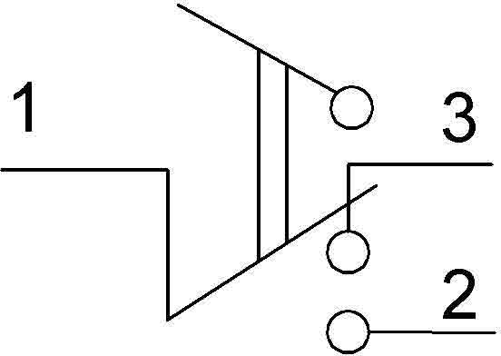
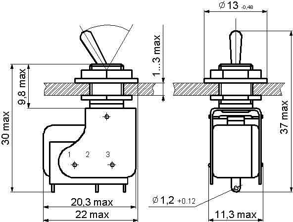
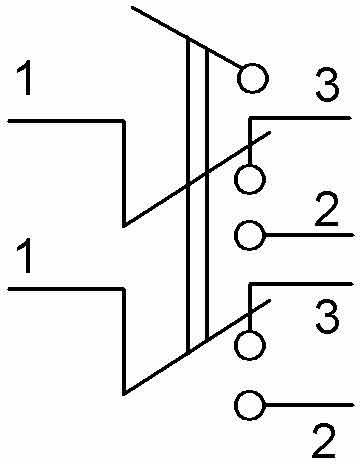
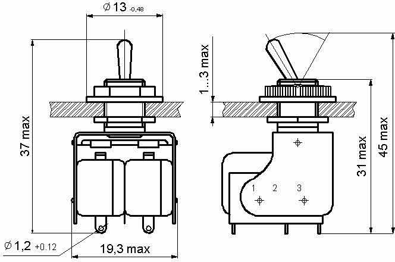

Тумблер МТ-1
Тумблеры предназначены для коммутации электрических цепей постоянного и переменного тока в радиоэлектронной аппаратуре. Изготавливаются во всеклиматическом исполнении, для умеренного и холодного климата, являются изделиями ручного управления и предназначены для объемного монтажа.
Тумблер изготовлен из пластмассы с металлическим узлом. На металлическом узле выбита маркировка контактов.

Схема подключения тумблера

Чертеж и размеры для монтажа тумблера
Технические характеристики тумблера МТ-1:
- Род тока - постоянный
- Вид нагрузки - активная, индуктивная
- Напряжение - не менее 0,5 В и не более 30 В
- Ток - не менее 0,0005 А и не более 4 А
- Максимальная коммутируемая мощность 70 Вт
- Сопротивление контакта, не более - 0,05 Ом
- Электрическая прочность изоляции - 1100 В
- Усилие переключения:
- - для приемки «1» от 1,96 до 11,8 Н
- - для приемки «5» от 2,45 до 11,8 Н
- Сопротивление изоляции, не менее - 1000 МОм
- Масса - 13 г
Содержание драгоценных металлов - серебро 0,107191 грамм (тумблеры МТ-1, МТ-3 и им подобные имеют латунные выводы и элементы внутри, но бывают и позолоченные).
Тумблер МТ-3
В принципе тот же тумблер, что и описан выше, только сдвоенный. Двухполюсный, вес 18 грамм.
Тумблер не предназначен для разборки, он имеет три заклепки - две соединяют металлический кожук с микропереключателями, третья - ось ручки переключенния.

Схема микротумблера МТ-3

Чертеж микротумблера МТ-3